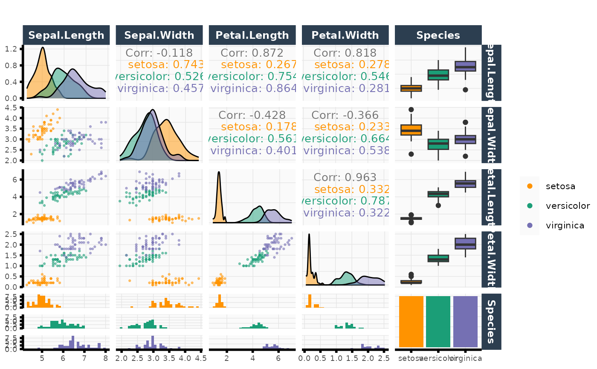
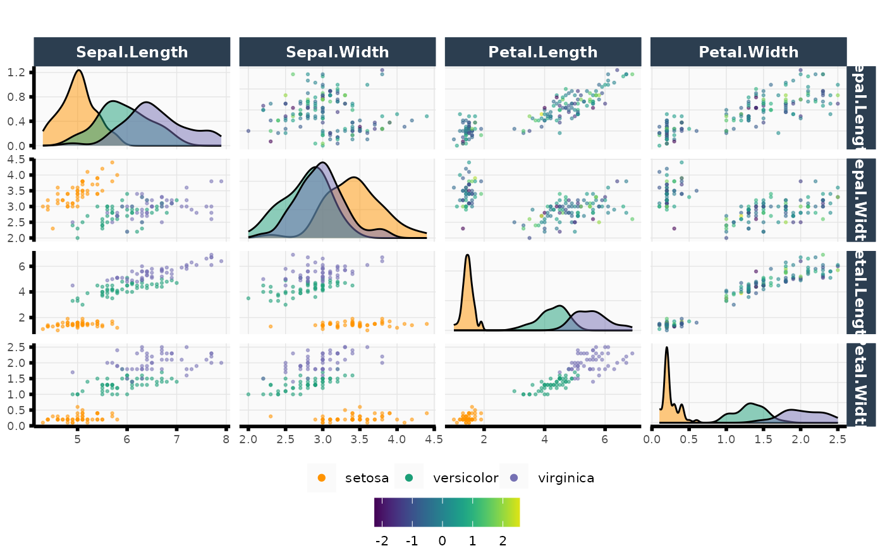

Custom ggpair plots
plot_pairs.RdCreates pair plots, extending functionality beyond
GGally::ggpairs() such as the ability to add two different color schemes
(one for the lower triangular subpanels and another for the upper
triangular subpanels).
Usage
plot_pairs(
data,
columns,
column_labels = NULL,
color_lower = NULL,
color_upper = NULL,
color_label_lower = "",
color_label_upper = "",
color_scheme_lower = NULL,
color_scheme_upper = NULL,
title = "",
point_size = 0.5,
point_alpha = 0.5,
cor_text_size = 3.5,
subsample = 1,
show_upper = TRUE,
drop = TRUE
)Arguments
- data
Data frame to use for plot.
- columns
Vector of column indicies or column names to plot.
- column_labels
(Optional) Label names to be displayed on strips.
- color_lower
(Optional) Data vector to use as colors for lower ggplot panels.
- color_upper
(Optional) Data vector to use as colors for upper ggplot panels.
- color_label_lower
Character string. Label for color legend title (used in lower ggplot panels).
- color_label_upper
Character string for color_upper legend title (used in upper ggplot panels).
- color_scheme_lower
(Optional) Vector of colors to set manual color scheme corresponding to color_lower argument (i.e., the color scheme in the lower panels). If
NULL(default), viridis color scheme is used.- color_scheme_upper
(Optional) Vector of colors to set manual color scheme corresponding to color_upper argument (i.e., the color scheme in the upper panels). If
NULL(default), viridis color scheme is used.- title
Character string. Title of plot.
- point_size
Point size for
ggplot2::geom_point().- point_alpha
Alpha value for
ggplot2::geom_point().- cor_text_size
Size of correlation text.
- subsample
Proportion of rows to subsample and plot.
- show_upper
Logical. Should we show subplots in upper panels?
- drop
Logical. Whether or not to drop factors with no observations.
Value
A GGally::ggpairs object.
Examples
plot_pairs(data = iris, columns = 1:ncol(iris), color_lower = iris$Species)
#> `stat_bin()` using `bins = 30`. Pick better value with `binwidth`.
#> `stat_bin()` using `bins = 30`. Pick better value with `binwidth`.
#> `stat_bin()` using `bins = 30`. Pick better value with `binwidth`.
#> `stat_bin()` using `bins = 30`. Pick better value with `binwidth`.

plot_pairs(
data = iris, columns = 1:4,
color_lower = iris$Species, color_upper = rnorm(nrow(iris))
)
